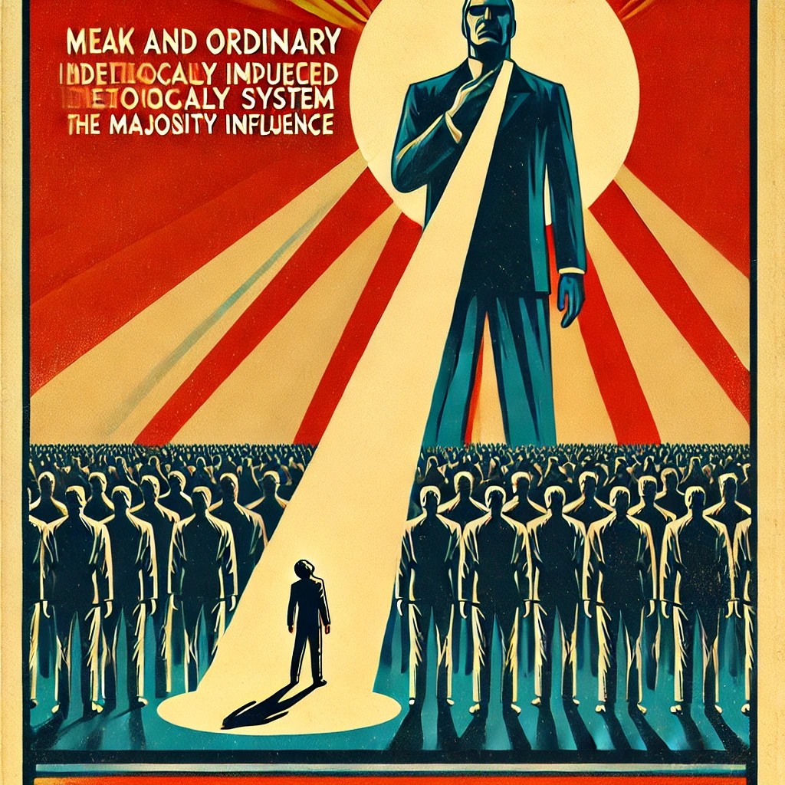

히틀러의 딸
목차
작가
재키 프렌치
출판일
2008년
감상평에 대한 AI그림
아이들의 이야기 짓기 놀이 형식을 빌려 전개되는 액자식의 소설이다. 책의 후반부 아이들은 원주민 수탈로 이루어진 집안의 어두운 내력과 그에 대한 가족들의 변명, 호주의 어두운 역사를 듣게 되고 의문을 떠올리게 된다.
내가 올바른 사람인지 확인할 방법은 존재할까? 만약 나를 둘러싼 사회 전부가 악이라면, 무엇이 정의인지 정말로 알 방법은 없을까? 생각할 거리를 던져주는 책이다.

감상평에 대한 AI평가
감상평을 잘 정리해 주셨습니다. 책의 형식과 주제를 간결하게 전달하셨고, 특히 독자에게 생각할 거리를 던지는 점이 인상적입니다.
책이 제시하는 질문을 강조한 부분은 좋지만, 조금 더 구체적인 감상을 덧붙이면 더욱 풍부한 글이 될 것 같습니다. 예를 들어, 이야기 짓기 놀이와 소설의 전개 방식이 어떻게 연결되는지, 그리고 '호주의 어두운 역사'가 구체적으로 무엇을 의미하는지 설명하면 독자가 내용을 더 잘 이해할 수 있을 것입니다.
전반적으로 명확하고 이해하기 쉬운 글이지만, 개인적인 생각이나 인상 깊었던 부분을 조금 더 추가하면 감상평이 더욱 깊이 있어질 것 같습니다. 😊